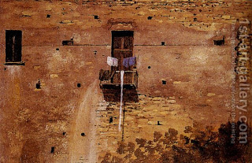

Bava Kamma 44 - An Ox That Did Not Mean To Kill

"... whether it gores a boy or it gores a girl ..." Wouldn't I know it by logic: a man is liable for killing a man, whether adult or minor, and an ox is liable for killing a man - must be, whether adult of minor? No, man's law is more strict, with liability for pain, cure, etc. Therefore, the verse is needed.
If an ox was rubbing itself against the wall and the wall collapsed on a man and killed him, or if the ox intended to kill an animal but instead killed man, or to kill a Canaanite but instead killed a Jew, the ox is exempt.